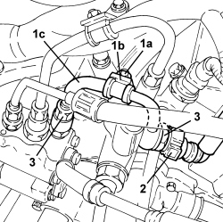

1056F74 LOW PRESSURE PIPE TO FUEL PRESSURE PUMP R R
- Path
- Procedures > 10 ENGINE > 1056 PETROL INJECTION SYSTEM > 1056F PETROL DIRECT INJECTION SYSTEM > 1056F74 LOW PRESSURE PIPE TO FUEL PRESSURE PUMP R R
- Kind
- repair procedure (removal / refitting; the operation number is the code)
- Applies to
- engines: 1.9 JTS, 2.2 JTS, 3.2 JTS; all production periods
- Interactive page
- https://sloeber94.github.io/elrnDB/#/939010539
Applies to: engines: 3.2 JTS; all production periods
 Removing
Removing
 Refitting
Refitting
Applies to: engines: 1.9 JTS, 2.2 JTS; all production periods
Topics linked from this page (1)
Topics that link to this page (6)
- 1056F61 LEFT CYLINDER HEAD FUEL MANIFOLD PIPE - R.R.
- 1056F62 RIGHT CYLINDER HEAD FUEL MANIFOLD PIPE - R.R.
- 1056F66 LEFT CYLINDER HEAD INJECTOR SET - R.R.
- 1056F67 RIGHT CYLINDER HEAD INJECTOR SET - R.R.
- 1056F72 PRESSURE PUMP R R
- 1072B21 AIR INTAKE FUEL MANIFOLD INTERGRATED DUCT R R AND REPLACE GASKET